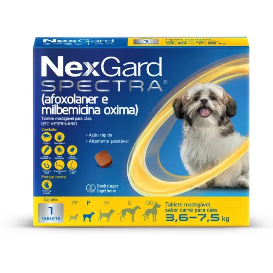

NexGard Spectra 36kg a 75kg Antipulgas Carrapatos e Vermifugo
R$ 250,00
Ver descrição do produto
NexGard Spectra é um produto multifuncional desenvolvido para cães de grande porte, oferecendo proteção completa contra pulgas, carrapatos e vermes em um único comprimido, contribuindo para a saúde e o bem-estar do animal.
- Indicação:
- cães de 36 a 75 kg
- Categoria:
- antipulgas, carrapatos e vermífugo
- Animal:
- cães
- Proteção:
- contra pulgas, carrapatos e vermes
- Apresentação:
- comprimido mastigável